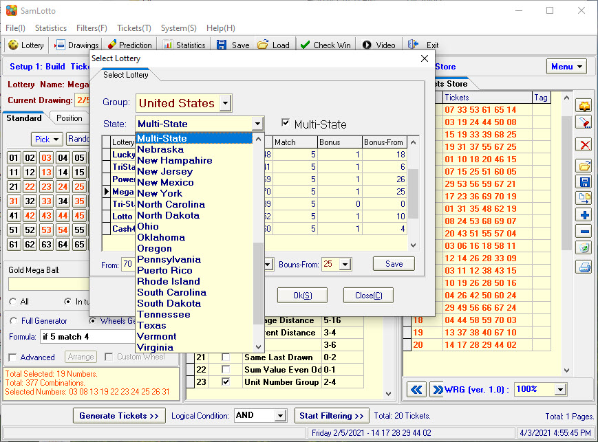
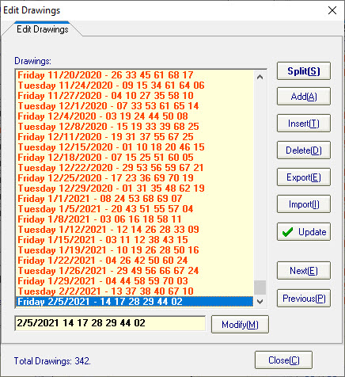
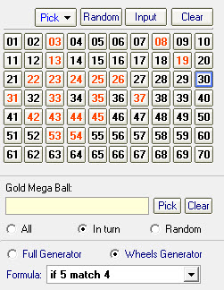
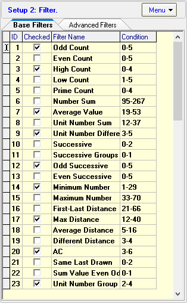
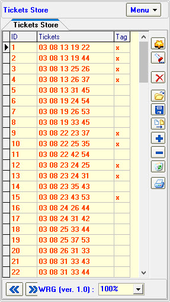
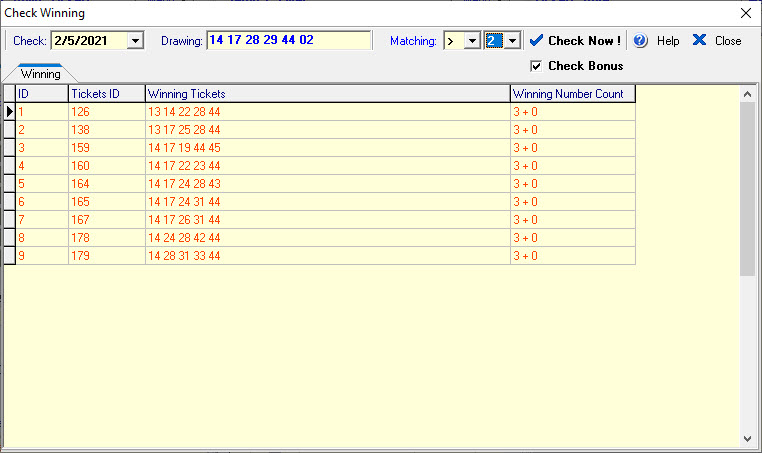

Follow the instructions below to start using SamLotto
right away. The steps should be performed in the order listed. Please refer to
the other chapters in this help file for more detailed information.
To open your lottery: On the Toolbar, click the
Lottery button open the select lottery form. Click on
the name of the lottery you want to play. Click the Ok
button.

To update your lottery file with the latest
drawings: On the Toolbar, click the Drawings
button open the Drawings Form. Click the Add button
add numbers, click the Update button online update
drawings data.

To create your lottery tickets: SamLotto
support Standard, Wheel, Positoin and Random Mode create the tickets. Click Generate Tickets button add the tickets to the tickets
form.

To filtering
tickets: Checked your selected filters and set the filter conditoin
then click Start Filtering button.

To Edit
tickets: You can edit, add, delete, save, export, formate export,
import and print tickets.

To Check Winning tickets: On the Toolbar,
click the Check Win button show the check winning
window.

Home
Page: http://www.samlotto.com
Support:support@samlotto.com
Copyright: © SamLotto Lottery Software Team All rights reserved.